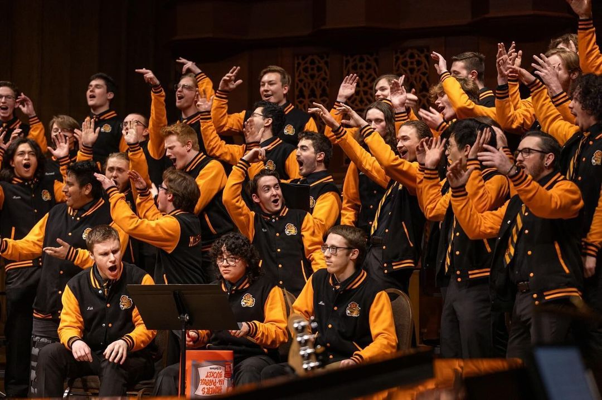
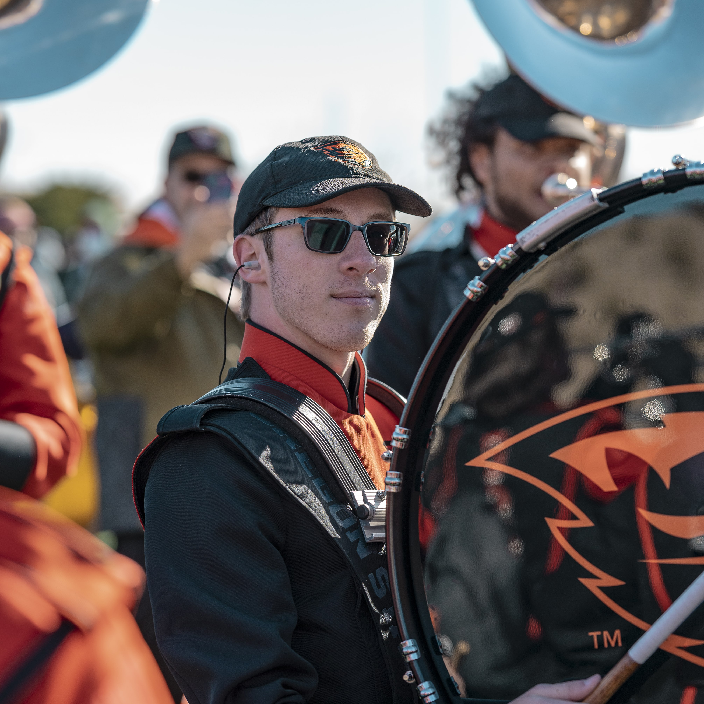
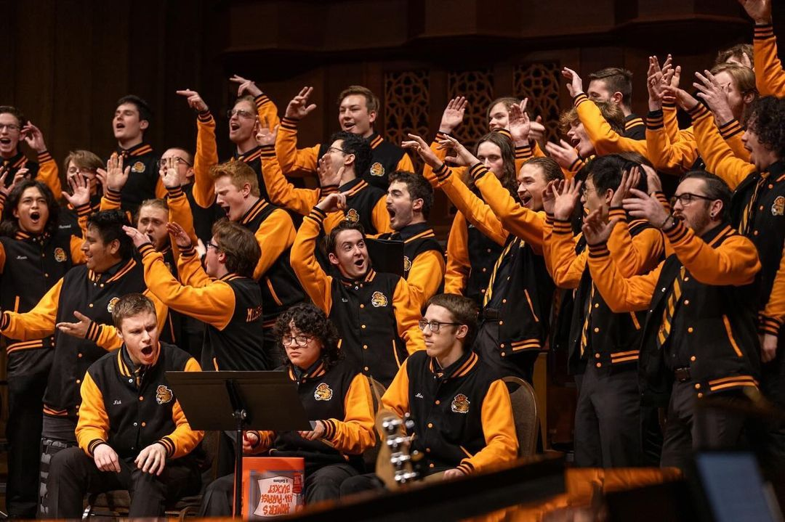
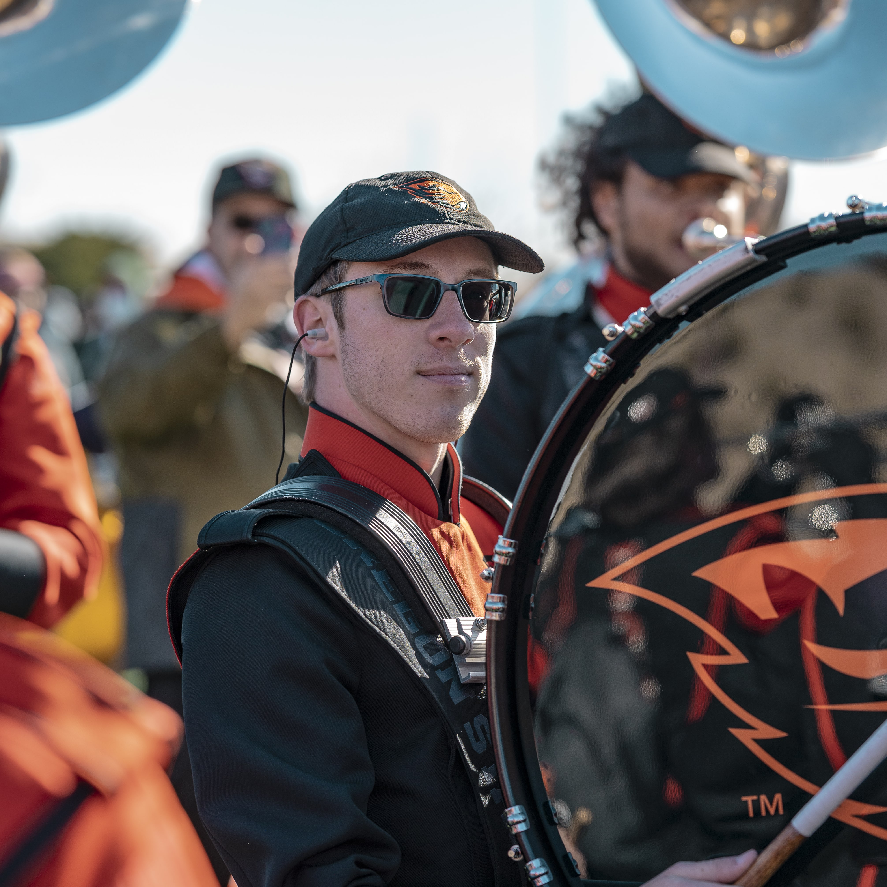

Music Performance
One of my largest hobbies is performing as a musician in many groups on & off campus! I am a percussionist, which means I play almost every instrument that doesn't use air to work. This includes mallet instruments like the xylophone, a number of drums, and other instruments like cymbals, whistles, and bells. On campus, I am most involved in the "Spirit and Sound of OSU" - the OSU Marching Ensemble, the Meistersingers choir, and the OSU Percussion Ensemble.
Below you can see a few of the instruments I play and some of the groups I'm in:
 



Programming and Cybersecurity
Another of my big hobbies is exploring programming and cybersecurity. I am a member of the OSU Security Club, which participates in many national and international hacking and defensive programming competitions hosted by other public and private universities; governmental agencies such as the CIA, NSA, and FBI; and international corporations and partners.
The three things I enjoy most about this hobby are:
- The ability to gain a deep understanding of the systems we use daily, finding the unintended ways they can be used to gain an advantage.
- Being able to participate in international competitions and use what I learn in a practical way.
- Getting to constantly learn new and exciting methods just being discovered in the industry.
You can find more information about the OSU Security Club at our website.